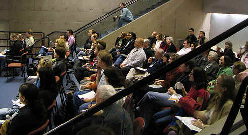
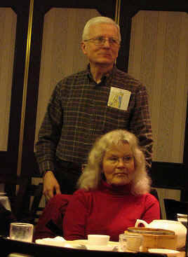

Viaggio
Note V041101
Bloggers
Vancouver Northern Voices February 19, 2005
V041101d>
2022-05-06
-12:10 -0700
|
|
Viaggio
Note V041101 |
|
| 2005
February 19. The first Northern Voices
bloggers conference was held in Vancouver, British Columbia, on
Saturday, February 19. The day began at 8am and there was an
after-dinner party that same evening. Vicki and I took Amtrak (in
this case, Thruway bus service) to town on Friday, staying over two
nights to be able to enjoy ourselves without rushing. This was
also Vicki's opportunity to go over to Vancouver Island and visit a
potter whose work she admires. It looks like she'll be back this
summer for a workshop that she learned about.
I didn't take my camera to Vancouver, so the only photographs that I can point to are those provided by the many others who took photographs and posted them to their blogs and to Flickr. In Julie Leung's session, I had nearly run the battery down on Blocco, my new tablet PC. There were no outlets or power strips in the audience area of this side room. So I am without props altogether. What you can't tell in this picture is how wet my cheeks were through most of the presentation. Robert Scoble confided the same thing, and Tim Bray beautifully echoes the sentiment. |
|
|
 |
|
|
 |
Julie and Ted Leung and friends of theirs in Vancouver BC arranged a dim sun brunch for Sunday after Northern Voices. I love this picture for three reasons. First, that is the fellow that I recognize in the mirror in the mornings. Secondly, this is one of the few times that we were at a blogger/geek event together, although Vicki was off at a different adventure during Northern Voices. The best part is that Vicki and I were weary from the long day before; I am rubbing her shoulder and the back of her neck while we absently observe the groups around the tables. It is wonderful that we were caught in that moment together. |
| You are navigating Orcmid's Lair |
created 2005-02-21-11:52 -0800 (pst) by orcmid |